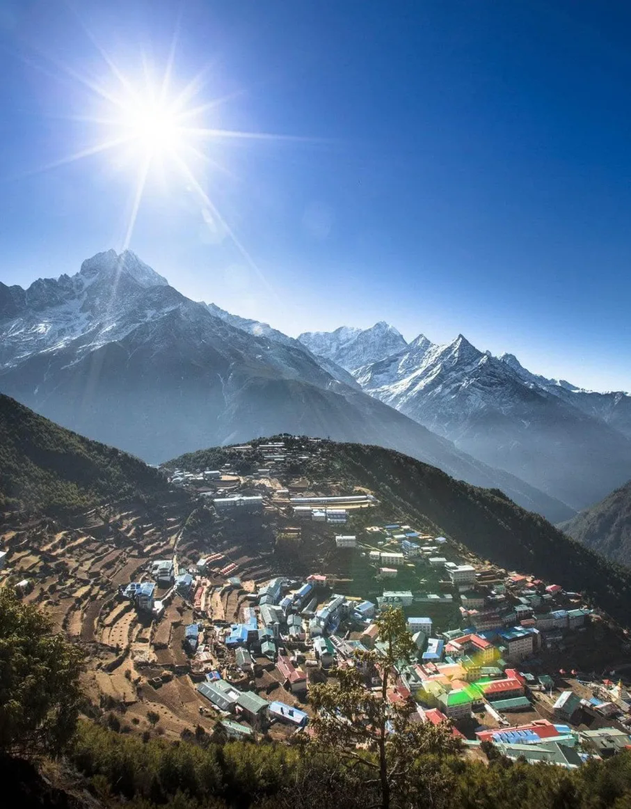
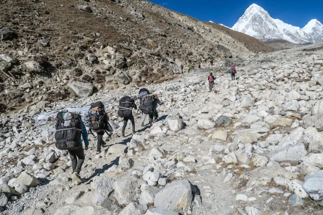
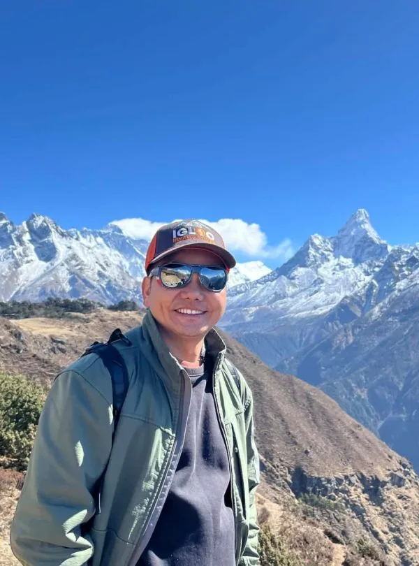
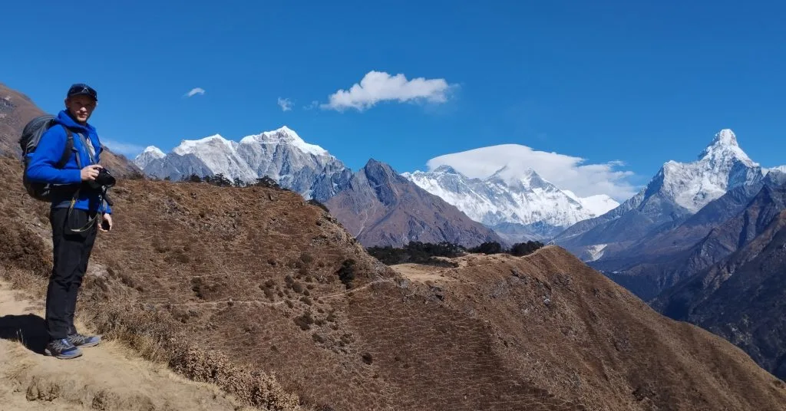
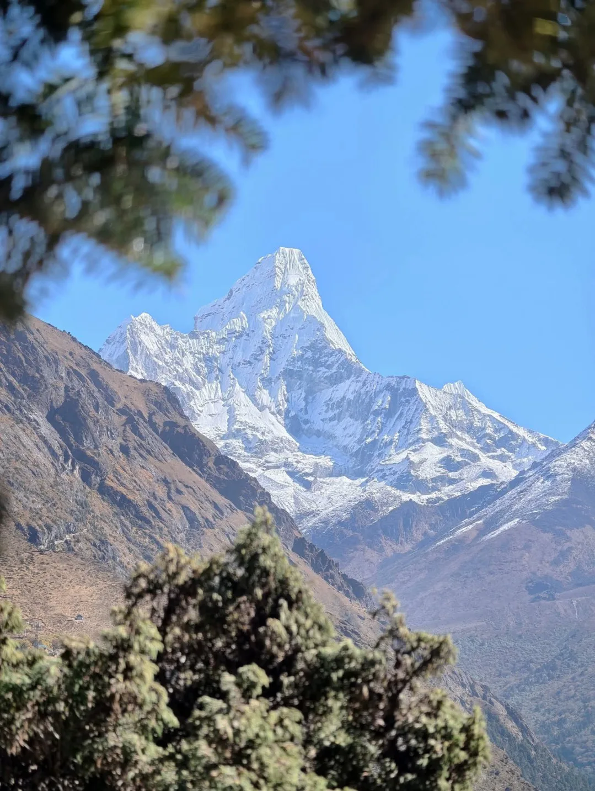

1. Executive Summary: Why Winter Is the Secret Golden Season for Everest View
Ask any experienced Sherpa mountain guide what their favorite time of year is, and many will answer without hesitation: winter.
Between December and February, the high-altitude jet stream sweeps monsoon humidity far away from the subcontinent. The result is weeks of continuous, uninterrupted sunshine and razor-sharp atmospheric clarity that autumn and spring simply cannot match.
While trekking all the way to Everest Base Camp (5,364m) in winter involves genuine hardship—frozen pipes, Arctic gale winds, and closed high-altitude lodges—the Everest View Trek tops out at 3,880 meters. At this lower elevation, you stay within the sheltered Dudh Koshi pine valley where lodges remain open, electricity is uninterrupted, and daytime temperatures remain comfortable for hiking.
Why Winter Works Best on the Everest View Route
- Zero Crowds: You share the trail with local Sherpas rather than hundreds of commercial trekking groups.
- 90%+ Clear Days: Cloud cover is virtually non-existent between 8:00 AM and 3:00 PM.
- Direct Kathmandu Flights: Avoid the exhausting 4-hour midnight bus transfer to Ramechhap.
- Superior Lodge Service: Teahouse hosts have ample time to chat, provide extra blankets, and serve fresh meals.
- Lower Trip Cost: Off-peak airfare discounts and flexible lodge rates save up to 15% on overall trip expenses.
2. Winter Temperatures & Meteorological Data (Dec, Jan & Feb)

Winter in the lower Khumbu is characterized by extreme diurnal temperature swings. Understanding this contrast is key to enjoying your trek:
| Location & Altitude | Avg Daytime High (In Sun) | Avg Nighttime Low | Precipitation & Snow Risk | Sunshine Hours |
|---|---|---|---|---|
| Lukla (2,846m) | 10°C to 14°C (50°F to 57°F) | -2°C to -6°C (21°F to 28°F) | Very low (1–2 days snow/month) | 7.5 hours / day |
| Phakding (2,610m) | 11°C to 15°C (52°F to 59°F) | -3°C to -7°C (19°F to 26°F) | Dry valley floor; morning river frost | 7.0 hours / day |
| Namche Bazaar (3,440m) | 6°C to 10°C (43°F to 50°F) | -6°C to -12°C (10°F to 21°F) | Crisp, dry; light snow flurries possible | 7.5 hours / day |
| Hotel Everest View (3,880m) | 4°C to 8°C (39°F to 46°F) | -8°C to -14°C (7°F to 17°F) | Dry ridges; brilliant morning clarity | 8.0 hours / day |
| Tengboche Monastery (3,867m) | 3°C to 7°C (37°F to 45°F) | -10°C to -16°C (3°F to 14°F) | Occasional 10–20cm snowfall; cold ridge winds | 7.5 hours / day |
Because the air is thin and free of humidity, solar radiation is extraordinarily intense. When walking uphill between 10:00 AM and 2:00 PM under direct sunshine, you will often feel warm enough to hike in just a long-sleeve base layer or light fleece! The cold only bites once the sun dips behind the mountain ridges.
3. Month-by-Month Guide: December vs. January vs. February

Each winter month offers a distinctly different trekking dynamic:
| Month | Atmospheric Clarity | Cold Factor | Trail Traffic | Best For |
|---|---|---|---|---|
| December | Exceptional (9.5/10) | Moderate winter cold (-8°C nights in Namche) | Light to moderate (Christmas/New Year surge) | Holiday trekkers, families, first-time winter hikers |
| January | Absolute Peak (10/10) | Coldest month of the year (-12°C to -15°C nights) | Lowest of the year (Pure solitude) | Hardcore landscape photographers, silence seekers |
| February | Very High (9.0/10) | Warming trend; late Feb brings pre-spring breezes | Gradual increase toward late month | Trekkers wanting winter clarity with slightly warmer afternoons |
4. Why Everest View Thrives in Winter While Full EBC Suffers

Many travelers assume that because Everest Base Camp is extremely harsh in winter, the entire Everest region is off-limits. This is completely untrue!
| Winter Factor | Everest View Trek (Under 3,900m) | Classic Everest Base Camp (Over 5,000m) |
|---|---|---|
| Nighttime Indoor Temperatures | Dining rooms heated to +14°C; bedrooms ~0°C to -4°C | Unheated bedrooms plunge to -18°C to -25°C |
| Water Supply & Toilets | Indoor running water; functioning Western flush toilets | All pipes frozen solid; outdoor frozen bucket squats |
| Teahouse Availability | Best lodges in Phakding & Namche open year-round | Many high lodges in Lobuche & Gorak Shep shutter for season |
| Wind Chill Exposure | Sheltered inside deep Dudh Koshi pine river gorge | Exposed to hurricane-force Arctic jet stream on moraine |
| Acute Mountain Sickness (AMS) Risk | Extremely low (<2% mild cases) | Elevated (Cold exacerbates pulmonary vasoconstriction) |
5. Teahouse Hospitality in Winter: Warm Stoves & Open Lodges

Winter transforms teahouse life into an intimate, heartwarming cultural experience:
- The Hearth Fire: Around 4:00 PM each afternoon, lodge hosts stoke the central cast-iron stove with dried yak fuel or firewood. Trekkers, guides, and Sherpa family members gather around the fire to sip hot butter tea, read books, and share trail stories.
- Heated Mattresses in Namche: Deluxe lodges such as Panorama Lodge and Namche Hotel feature electric heating mattress pads and ensuite gas-heated showers that operate reliably all winter long.
- Generous Portions & Hot Food: Because lodges are not overwhelmed with cooking for 50 people simultaneously, meals are cooked freshly to order, steaming hot, and served with generous free refills of Dal Bhat and garlic soup.
Before heading to bed around 8:30 PM, ask the kitchen staff to fill your 1-liter metal Nalgene bottle with boiling water ($2–$3 USD). Slide the hot bottle inside a thick wool sock and tuck it into the bottom of your sleeping bag. It acts as a personal radiator for 6 to 8 hours and provides clean drinking water for morning brush-up!
6. Trail Conditions: Snowpack, Shaded Ice & Microspikes

Contrary to common belief, the lower Everest trails are NOT buried in deep snow for three months. The Khumbu is a high-altitude desert; winter precipitation is infrequent, and midday sunshine quickly evaporates snow on sun-exposed paths.
The primary winter trail hazard is black ice on shaded stone stairs:
Where Ice Forms
Waterfalls and mountain seepages that freeze overnight create slick, invisible patches of black ice on granite flagstones. The most common trouble spots are the shaded forest switchbacks between Toktok and Benkar, and the northern descent from Tengboche through the rhododendron woods.
The Microspike Solution
You do NOT need heavy mountaineering crampons. A simple pair of slip-on elastic elastomer microspikes (such as Kahtoola Microspikes or Yaktrax) with 1cm steel teeth can be pulled over your boots in 10 seconds, providing 100% grip over icy stone stairs.
Never pack your microspikes inside your main duffel bag carried by your porter. Trails can transition from dry dirt to treacherous hardpack ice within a single turn around a shaded mountain spur. Keep them in the top pocket of your daypack along with your trekking poles.
7. Specialized Winter Gear & Layering Checklist

While the basic four-layer clothing system remains the same, winter requires specific thermal upgrades:
| Gear Item | Standard Season Spec | Winter Specification Upgrade | Why It Matters |
|---|---|---|---|
| Down Jacket | 650–700 Fill Power (Lightweight) | 800+ Fill Power Baffled Down Jacket | Critical for evening walks and dawn viewing at Hotel Everest View |
| Sleeping Bag | -5°C to -10°C (3-season) | -15°C to -20°C (4-season Down Bag) | Unheated lodge bedrooms drop below -10°C in January |
| Foot Traction | None | Elastomer Microspikes (1cm teeth) | Prevents slip-and-fall injuries on shaded stone trails |
| Gloves | Fleece liner gloves | Windproof Mittens + Touchscreen Liners | Mittens keep fingers grouped together for superior warmth in biting winds |
| Thermos | Standard plastic Nalgene | 1L Double-Wall Vacuum Insulated Flask | Prevents hot tea from freezing solid during cold morning stages |
8. Lukla Winter Flight Reliability: Direct Kathmandu Flights Return!
One of the biggest logistical surprises for winter travelers is that Lukla flights are often significantly more reliable in winter than during the peak autumn and spring seasons!
Here is why:
- Stable Morning Weather: High pressure dominates eastern Nepal in winter. Morning fog and cloud build-ups that plague spring and monsoon afternoons are rare in winter. Morning skies over Lukla airstrip are crystal clear from 6:30 AM to 11:00 AM.
- Direct Kathmandu Flights (TIA ↔ LUK): In peak seasons (Oct/Nov & Apr/May), the Civil Aviation Authority of Nepal (CAAN) redirects all Lukla tourist flights to Ramechhap Airport (Manthali), requiring a grueling 4 to 5-hour midnight road journey. In winter, low air traffic allows airlines (Tara Air, Summit Air, Sita Air) to operate direct flights from Tribhuvan International Airport (Kathmandu) straight to Lukla!
Even though winter visibility is generally stellar, occasional winter storm fronts originating from western disturbances can ground flights for 24 to 48 hours. Always build at least one contingency buffer day into your Kathmandu itinerary before your international flight home.
9. Cultural Highlight: Mani Rimdu & Sherpa Winter Traditions
When the peak trekking crowds depart in late November, the Khumbu returns to its authentic, tranquil rhythm.
Winter is when local Sherpa communities celebrate their most sacred and joyous religious milestones:
- Late Autumn / Early Winter Mani Rimdu: Held at Tengboche Monastery (usually in November or early December), this 19-day Buddhist festival features masked sacred Cham dances performed by resident monks reenacting the triumph of Buddhism over demonic forces.
- Gyalpo Losar (Sherpa New Year): Celebrated in February with traditional Tibetan chang (barley beer), deep-fried khapse pastries, and colorful prayer flag replacement ceremonies across every household in Namche Bazaar and Khumjung.
- Intimate Monastery Visits: You can sit quietly inside Tengboche or Khumjung Gompa during morning chanting ceremonies without hundreds of jostling tourists and camera tripods blocking the shrine.
10. Winter Photography: Unmatched Atmospheric Clarity & Golden Hour Light
For professional and amateur photographers alike, winter in the Khumbu offers conditions that money cannot buy:
Zero Atmospheric Haze
In spring, dust from northern India and forest fire smoke often create a milky valley haze that softens mountain ridges. In winter, crisp sub-zero air produces 100% optical clarity. You can capture sharp, individual ice seracs on the Lhotse face from 20 kilometers away!
Low-Angle Golden Light
Because the sun sits lower on the southern horizon throughout winter, the quality of light is softer and warmer for longer portions of the day. The sunrise illumination over Mount Everest and Ama Dablam from the Hotel Everest View terrace is unmatched.
11. Mountain Safety: Hypothermia Prevention & Frostbite Defense
Staying safe in sub-zero alpine environments requires discipline and proactive heat management:
- Prevent Sweat-Chilling: The most dangerous mistake on uphill ascents is overdressing. If you sweat heavily while climbing the Namche Hill, your wet base layer will conduct body heat away 25 times faster the moment you stop. Strip down to your base layer before climbing; throw on your down jacket immediately upon stopping.
- Hydrate with Hot Drinks: Breathing dry winter air causes heavy respiratory moisture loss. Avoid drinking ice-cold water from your pack, which lowers your core temperature. Order hot lemon-ginger-honey tea or boiled water at trail teahouses.
- Check Fingers & Toes: If your toes or fingers become numb while hiking in the shade, stop immediately, put on your windproof mittens or down socks, and perform arm-swings to force blood flow to extremities.
12. Winter Itinerary Adjustments: Maximizing Short Daylight Hours
Winter days are roughly 2 hours shorter than summer days:
- Sunrise: Approx. 6:45 AM
- Sunset: Approx. 5:15 PM
- The 'Shadow Threshold': Because deep Himalayan canyons block low-angle sunlight, valleys fall into cold shadows by 3:00 PM.
Igloo Himalaya Treks Winter Rule: Always start your trail stages by 7:45 AM so you arrive at your destination lodge by 1:30 PM to 2:00 PM, enjoying hot soup while the dining room stove is fired up.
13. Pros & Cons Matrix: Is a Winter Everest View Trek Right for You?
We believe in honest mountain guidance. Here is an unfiltered assessment of whether a winter Everest trek suits your personal travel style:
| Major Advantages (Why Go in Winter) | Real Trade-offs (What to Prepare For) |
|---|---|
| Unmatched Visual Clarity: 90%+ crystal clear days with zero dust haze. | Freezing Nights: Unheated lodge bedrooms drop to -8°C to -12°C. |
| Tranquil Trails: Complete peace and quiet; no queues on suspension bridges. | Shorter Daylight: 7 hours of hiking light; early teahouse arrivals required. |
| Direct Kathmandu Flights: Frequently skip the grueling Ramechhap road detour. | Icy Trail Sections: Microspikes required on shaded descents. |
| Warm Teahouse Hospitality: Hosts have time to sit and share stories by the stove. | Fewer Open Shops: Some souvenir shops in Namche close for winter vacation. |
14. Frequently Asked Questions: Everest View Trek in Winter
How cold does it really get on the Everest View Trek in winter?
Daytime temperatures in Namche Bazaar under direct sunshine are surprisingly pleasant, averaging 6°C to 12°C (43°F to 54°F). However, nighttime temperatures drop sharply once the sun sets, reaching -6°C to -12°C (10°F to 21°F) in Namche and up to -16°C at Tengboche Monastery. A four-season sleeping bag rated to -15°C is essential.
Are Lukla flights canceled more often in winter?
Surprisingly, no! Winter mornings in eastern Nepal are characterized by stable, clear, high-pressure weather with far less cloud cover than spring or monsoon. Additionally, lower passenger volumes allow flights to depart directly from Kathmandu (TIA), avoiding the 4-hour midnight bus ride to Ramechhap.
Do I need crampons or microspikes for winter trekking?
You do not need heavy mountaineering crampons, but a pair of slip-on microspikes (with 1cm steel teeth) is strongly recommended. They provide invaluable traction over black ice on shaded stone stairs between Toktok and Namche, and on the descent from Tengboche.
Are teahouses open on the Everest View route in winter?
Yes. Because Namche Bazaar and Khumjung are permanent year-round Sherpa towns, high-quality teahouses, bakeries, pharmacies, and gear shops remain open throughout December, January, and February. Lodge dining rooms are heated with traditional yak-dung stoves every evening.
Can I take hot showers in teahouses during winter?
In Phakding and Namche Bazaar, many quality lodges have indoor gas-heated showers that function reliably throughout winter ($4–$5 USD). However, at Tengboche Monastery, pipes may freeze overnight, making hot bucket showers or wet-wipe sponge baths the practical alternative.
Is there snow on the trail during winter?
Because the Khumbu region is a high-altitude desert, snowfall is intermittent rather than continuous. Most of the trail consists of dry, frozen dirt and granite stairs. When light snow does fall, it typically melts on sunny slopes within 24 to 48 hours.
What is the best winter month to trek?
December is widely considered the best winter month, offering residual autumn weather stability, milder temperatures, and festive holiday cheer in Namche Bazaar. January is the coldest but offers absolute solitude and the crispest photography. February brings slightly warmer afternoons and early pre-spring wildlife activity.
Do I need to carry more battery power in winter?
Yes. Cold temperatures degrade lithium-ion battery capacity quickly. Bring a 20,000mAh power bank, keep spare camera batteries in your warm inner jacket pockets during the day, and tuck your phone and power bank inside your sleeping bag at night.

Ready to Experience the Himalayas?
Whether you are preparing for high-altitude trekking, cultural circuits, or alpine summit expeditions, start planning a bespoke journey tailored to your fitness, travel season, and style.